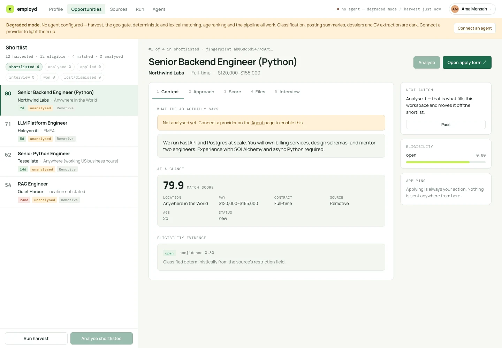

Two lanes of discovery
Seven public aggregators, plus an 884-company registry resolved into company job boards and your own watchlist.
AI-assisted workflow · Web · Local by design
Find the fit.
Keep the evidence.
A local workspace that finds remote roles a person could plausibly win, explains how to approach each one, and tracks what they did about it.

From thousands of postings to the few worth a serious application.
Seven public aggregators, plus an 884-company registry resolved into company job boards and your own watchlist.
Geo gate, seniority gate, anti-terms, then an unambiguous title signal, before anything is scored.
Each card has its own Analyse button. The agent classifies eligibility, quotes the posting, and builds a requirement-to-evidence matrix.
CVs, portfolios and notes are read into proposed capabilities, each tied to the exact span of the document that proves it.
Ranked, Analysed, Applied, Interview, Lost. No drag and drop and no JavaScript library.
OpenAI-compatible, Anthropic and Google formats, local models through Ollama or LM Studio, or the coding agent itself.
Architecture
Hover or tap a component to trace its connections.
Seven aggregators plus resolved company boards
Fetches and normalises postings politely
Geo, seniority, anti-terms and title signal, then ranking
Rejects any quote that is not verbatim in its source
Detects each careers page's job board and verifies it live
CVs and notes read into evidenced capabilities
Eligibility, requirement matrix and approach notes
Postings, profile, runs and decisions in ~/.employed
Harvest, resolve, match and analyse on a schedule
Board, job workspace, profile, sources and agent pages
Innovation one
Every ingested answer is checked: the quote must be a verbatim substring of the posting or document. A hallucinated quote is refused before it reaches the database.
Innovation two
Without an agent, harvest, the geo gate, matching and ranking still run. The dashboard names what is dark and why, rather than faking it.
Innovation three
A company's job board only counts once its API answers with a 200 and at least one real posting. Nothing becomes a source on a guess, and roughly a third of the registry resolves.
Technology stack
Next project